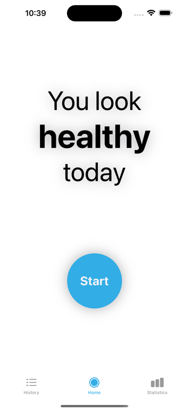
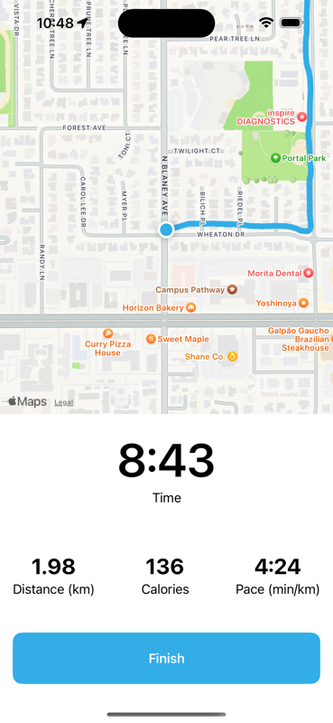
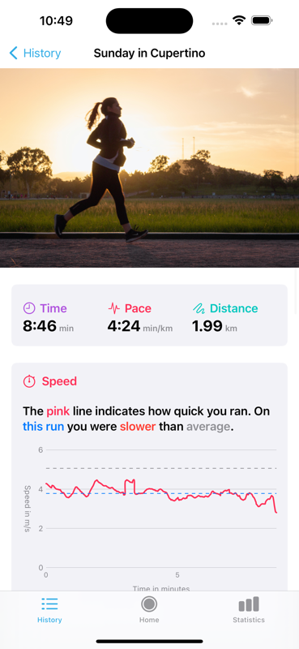
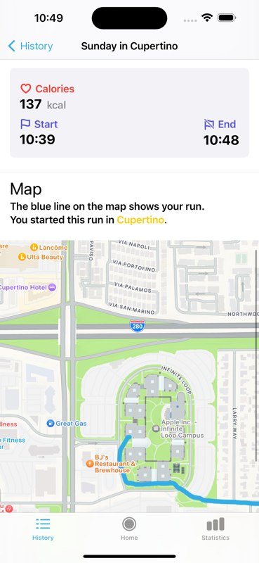
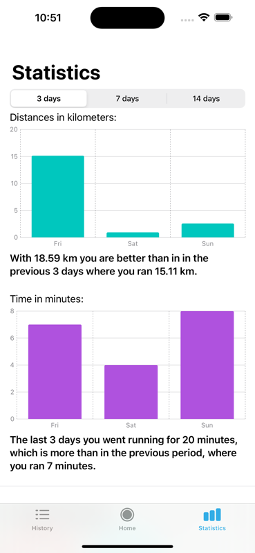
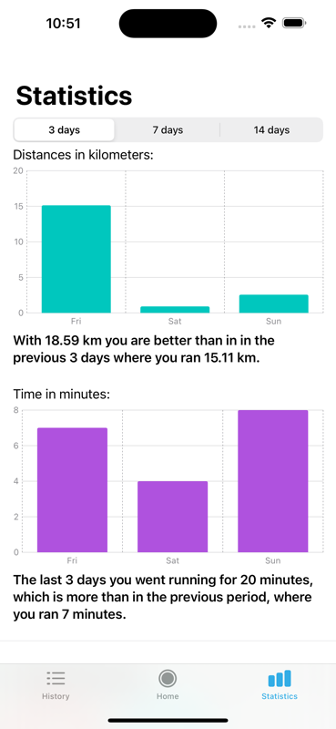

RunFlow
Experience your best run with RunFlow.
Transform your runs into fun journeys and track your path and peformance with the GPS tracking functionality of your phone. All this without sharing data with corporation. All recorded data and run statistics stay on your local device. Whether you are a beginner on an expert, this app is your ultimate companion. Happy running!
I've always wanted to have an app in the AppStore and have demostratable software published. I work so much for corporate that it felt nice to have something for myself, even though the app barely has any downloads. I've received some feature request via email but for now I am just leaving it as they are - the app is simple and I myself use it on all my weekly runs. Still I am happy about any bugfixes via email. Go to the AppStore to see my app Run Be Fit for the iPhone.
Lessons learned I wanted to do something different like in my day job and was happy to explore
- Swift is a nice programming language
- UX Design is not that simple. But with Apple's SwiftUI and the pre-build components in the native design it was pretty easy to put something together that is nice looking. When you stick with the default theme and style and just to that one well your app will look pretty cool after all. Thanks also to Apple's Human Interface Guidelines that proved beneficial.
Here are some screenshot from the app:




 
